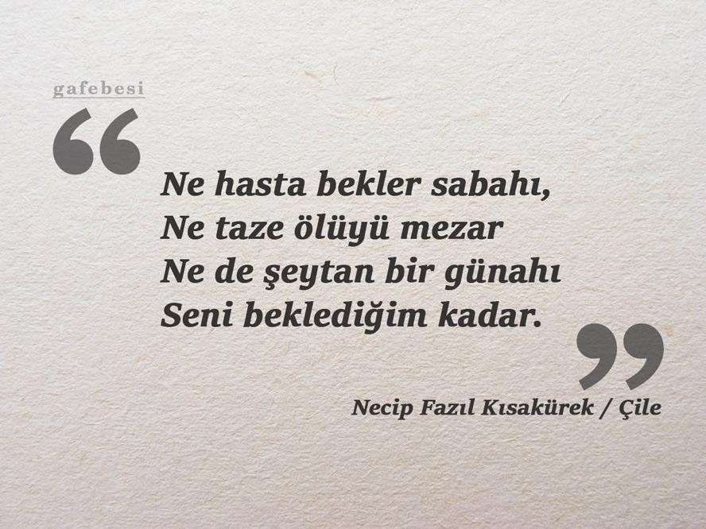
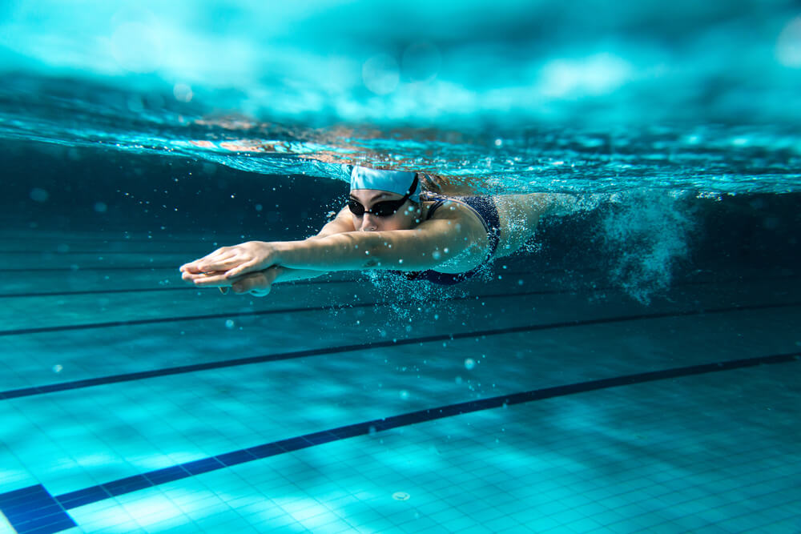
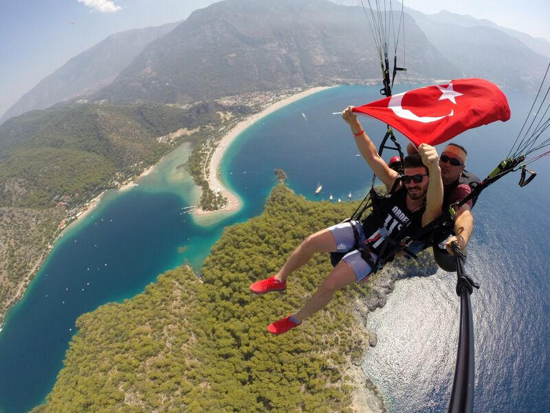

Merhabalar ben Ethem Belka ŞAHİN bu bölümde biraz kendimden bahsedeceğim. 2000 yılında Kahramanmaraş ilinin Andırın ilçesinde dünyaya geldim. Beş çocuklu bir ailenin en küçük üyesiyim. Ailede küçük olmanın çeşitli zorlukları olsa da ben bu durumdan oldukça memnunum. Ailemle birlikte Andırın'a bağlı Altınyayla Köyü'nde yaşıyorum. Tabi eğitimimden ötürü yılın büyük çoğunluğu Sakarya'da kalıyorum. Yani Sakarya'da yaşıyorum da denebilir. Yaz aylarında kendi ayaklarım üzerinde durabilmek için turizm sektöründe çalışmaya başladım. İlk deneyimim 2019 yazında oldu ve ben bu olayı devam ettirmek istiyorum. Size biraz hobilerimden ve yaptığım etkinliklerden bahstemek istiyorum ama bu konuda pek başarılı olacağımı sanmıyorum çünkü sırf mutlu olmak için yaptığım ya da hobi olarak düşündüğüm için yaptığım bir şey yok. Genelde yapmak zorunda olduğum şeyleri yaparken mutlu olmayı tercih ediyorum. Bu konuda bazı istisnalar olsa da genel olarak bunu başardığımı düşünüyorum. Bu sayfayı hobiler ve etkinlikler olarak iki kısımda ele aldım. Sayfadaki bazı hobi ve etkinlikleri ilerde yapmayı düşündüğüm için ya da yapmak istediğim şeyler olduğu için sayfaya ekleme gereği duydum. Zaten hobiler ve etkinliklerin açıklamalarında neden eklediğimi de yazacağım. Bu yazıyı okuduğunuz için teşekkür ediyorum.
DOĞA YÜRÜYÜŞÜ
Doğa yürüyüşü tek kelime ile mükemmel bir haftasonu hobisidir, özellikle de yürüyüşlere ve doğayı keşfetmeye özel bir tutkusu olan insanlar için!
Köyde doğup büyüdüğüm için hemen her gün doğa yürüyüşü yapardım. Memleketime her gidişimde bu aktiviteyi yaparım. Eğer yanımda da sevdiğim insanlar olursa saatlerce doğanın tadını çıkararak yürüyebilirim.
KİTAP OKUMAK
Okumak dünyada en çok sürdürülen aktivitelerdendir, ve son derece mantıklı bir sebebi vardır. Okumak çok yararlıdır!
Tam bir kitap kurduyum diyemesem de okumayı severim. Eğer bir kitaba başladıysam ve kitap da sürükleyiciyse mutlaka o kitabı bitirirm. Genel olarak okuduğum yazarlar
Sabahattin Ali,
Zülfü Livaneli,
Stefan Zweig,
Necip Fazıl olarak liste uzatılabilir.
ŞİİR DİNLEMEK
Müzik ruhun gıdasıdır derler şiir de bu gıdanın hammaddesidir bence.
Kahramanmaraş şairler memleketi olarak bilinir. Sanırım bu sebepten ötürü şiire farklı bir ilgim var. Küçükken yazmayı denemiştim ama daha sonra sadece dinlemek ve okumakla yetindim. Şiir dinlerken çok mutlu olduğumu hissedebiliyorum. Yedi Güzel Adam'a ek olara Nazım Hikmet, Cemal Süreya vb. şairleri dinlemeyi seviyorum.
YÜZMEK
Yüzmek rahatlamanın, güçlenmenin ve egzersiz yapmanın en pozitif ve sağlıklı yoludur.
Çocukluk yıllarımda kuzenlerimle birlikte köyümüzdeki derede yüzerdik. Tabi öğrenmesi biraz zor oldu çünkü bu konuda hiç ders almadım. Daha profosyonel yüzebilmek için bir yüzme kursuna yazıldım. Sonrasında biraz yorgun olsam da bunun için değer...
YAMAÇ PARAŞÜTÜ
Arasıra yamaç paraşütü yapanların videolarını izliyorum. İzlerken o insanların ne kadar rahatladığını görebiliyorum. Bazı korkuların insanı rahatlatacağını düşünüyorum.
İlerde bir gün yamaç paraşütü yapmayı planlıyorum. Tabi bunun için önce korkumu yenmem gerekecek. O gün geldiğinde korkumu yenmiş olmayı umuyorum. En azından denemek bile beni mutlu edecektir.
PROGRAMLAMA

Lisede mühendis olmayı planlamıştım. Fakat ne mühendisi olacağıma karar verememiştim. Sonuç olarak Bilgisayar Mühendisliğini kazandım.
Bu bölüme geldikten sonra öğrendim programlama dillerini ve programlamayı ama şuan iyi ki bu bölüme gelmişim ve programlama öğreniyorum diyorum. Kod yazarken veya yazmaya çalışırken her şeyi unutuyorum. Umarım bu konuda kendimi daha fazla geliştiririm.